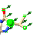

Basic simulation controls¶
Starting a simulation¶
Assuming your model meets the reuqirements (that is, all residues are complete with hydrogens and known to the MD forcefield), then starting a simulation is as simple as making a selection of atoms in the main ChimeraX window and clicking the play button in the bottom left of the ISOLDE panel (see below). Your selection may be anything from a single atom to all atoms in the model, but for the sake of performance should be as small as necessary to achieve the desired goal. Of course, the larger the selection the slower the simulation.
The selection size you can make while still achieving reasonably interactive performance is primarily dependent on your GPU (which does essentially all of the hard work of running the simulation). As a general reference, my “big” laptop (a gaming model with Intel Core i7 CPU and a NVidia GTX1070 GPU) manages about 15-20 coordinate updates per second when simulating all 229 residues of the demonstration model, and maintains reasonably interactive performance for up to a few thousand residues. Note that graphics performance (that is, responsiveness of the display when rotating, translating, zooming etc.) is only weakly affected by simulation size, and remains above 30 fps under most circumstances. My (much) smaller MacBook Air still manages surprisingly well. Not that I’d actually suggest seriously using such a small machine for an entire job, but it gives usably interactive performance for a few dozen residues at a time (sufficient for tweaking rotamers, loops etc.).
The maximum sized model that will successfully run non interactively is a limit I have yet to find, but will typically be limited by the amount of RAM on your GPU. I can tell you that simulations of the 3,792-residue 3ja8 with its 3.8Å map run successfully on both of the above machines. While in most cases simulation of the entire model will be far too slow to use interactively, it is nevertheless often necessary to run it for a few minutes prior to running any interactive simulations on smaller selections, to ensure any bad clashes and other very-high-energy states are relaxed out. (NOTE: for very large models and/or low-end hardware, initial minimisation of the entire model can take anywhere up to tens of minutes. Please be patient - once you see the atoms start moving it is safe to stop the simulation and continue working with more manageable selections)
Before we go ahead and start a simulation, let’s talk briefly about what happens to your initial selection when you press that play button. That’s controlled by this dialogue on the Sim settings tab:
The first spinbox controls how the selection will be extended along the chain(s), while the second controls how the resulting selection will be expanded outwards. The steps taken are:
The initial selection is expanded to complete residues (for any residue in which one atom was selected, all are selected);
For all residues in linear chains (i.e. protein or nucleic acid), each contiguous selection is extended forward and backward by the number of residues given in the first spinbox, stopping at chain breaks.
Any residue for which any atom comes within the distance given in the second spinbox from any atom in the selection defined by (2) is added to the selection.
The selection defined by (3) contains all the residues that will be mobile in the simulation. In addition, a shell of rigidly-fixed atoms is added surrounding the mobile selection, to make sure all mobile atoms maintain their physical context in the wider model.
If a distance restraint involves a mobile atom and a second atom which isn’t in the mobile or fixed selections, the residue containing the second atom is added to the fixed selection.
The default values are fine for most purposes, but feel free to play. Just keep in mind that very small simulations with only a few mobile residues surrounded by fixed atoms tend to be somewhat unstable, since they often have no freedom to relax bad (high-energy) interactions.
Dealing with unrecognised residues¶
If ISOLDE encounters a residue it does not recognise while preparing a simulation, a dialog box like the following will appear:
Click Exclude residue from simulations and retry if you’re quite sure that the residue is a non-standard one without AMBER parameters. The offending residue will then be ignored for the purposes of all further simulations (but will still be used for map calculations if working with live x-ray maps). If it is bonded to any parameterised residues, they will be fixed in space to ensure the ignored portion remains in context. (NOTE: you will need to take particular care - e.g. by using position restraints - to ensure that surrounding mobile residues are not pulled into the density associated with ignored residues.)
If the residue is one that you think should be recognised by the force field,
try using the Add hydrogens and retry button. If you’re not sure, click
Abort. The view will be focused on the offending residue, allowing you to
inspect and diagnose the issue. (NOTE: addh will occasionally add
spurious hydrogens to terminal residues - particularly N-terminal prolines
and 5’ nucleotides. In such cases, you can select the offending hydrogen with
ctrl-click and then use the command delete sel to remove it.)
Dealing with severe clashes¶
In a molecular dynamics forcefield, a severe clash (that is, a large overlap of the van der Waals radii of two non-bonded atoms) can easily yield energies in the tens of millions of kilojoules per mole. Simply starting a dynamic simulation with such a clash will yield nothing but a cloud of atoms flying off to infinity in every direction. For this reason, ISOLDE runs an energy minimisation at the start of every simulation. While the minimiser is generally very good at resolving clashes, it can still fail in particularly severe cases where sidechains are effectively “tangled”. If this happens, you will see the following warning:
Clicking OK will open the Clashes widget on the Validate tag, giving you a list of atoms experiencing particularly large net forces. Clicking on an entry will take you to the offending residue. Note that the simulation is still initialised - in many cases the clash can be resolved by adjusting rotamers via the Rebuild tab, at which point you can try continuing the simulation. In this case, the culprit is a (somewhat artificial) stack of clashing Phe residues:
After adjusting the offending sidechains back into density, the simulation successfully continues:
For more complex cases (in particular, anything that requires deletion of
atoms), you’ll need to stop the simulation (see below). One possible remedy is
to temporarily truncate one or more sidechains to alanine (e.g. for
residue 208 on chain A of model 1: delete #1/A:208&sideonly&~@CB). Don’t
forget to run addh after doing this! Remember that you can always add the
sidechains back once you have the backbone geometry under control (see
Preparing a model for simulation). A more extreme solution is to delete one or more
entire residues (delete #1/A:208). In this case you’ll need to use some
external package to add them back later.
General simulation controls¶
If you’re working with the demo model and you have the whole model selected, you shouldn’t run into any of the above problems. Just go ahead and click the play button, and let’s go through the rest of the buttons in this toolbar:
General simulation controls¶
|
If no simulation is running, starts one. If a simulation is running, controls pause/resume. |
Min/Equil |
Switch the simulation between energy minimisation and equilibration modes. (NOTE: due to the way minimsation works under the hood, minimisation is not very interactive. A quite effective “interactive minimisation” can be achieved by simply setting the temperature to 0 Kelvin in equilibration mode) |
Set the simulation temperature in Kelvin. The default 100K provides enough thermal motion to help “jiggle” atoms into more favourable conformations, without moving so fast as to be hard to control. The temperature can be adjusted to any value between 0 and 500K. |
|
Set a “checkpoint” for the current simulation. A checkpoint is simply a snapshot of the current simulation, including the atomic coordinates and the states of all interactive restraints. You should consider saving a checkpoint whenever you’re about to embark on a tricky or tentative manipulation of your model. Note that the checkpoint becomes invalid once the simulation is stopped. |
|
Return to the checkpoint you last saved, discarding all subsequent changes. If you have not saved a checkpoint yet, this will revert you to the start of the simulation. |
|
Stop the simulation, keeping the current state. |
|
Stop the simulation and revert to the last checkpoint. |
|
Abort the simulation, discarding all chainges (this will raise an “are you sure?” warning). |
Basic interaction¶
With your simulation running, right-click-and-drag on any heavy atom and you should see it follow your mouse cursor, with a 3D green arrow showing the direction of pull:

Interactive tugging forces are shown like this green arrow¶
This mouse mode is set every time the simulation starts. You can still use the buttons on the ChimeraX mouse modes toolbar to make the right mouse button do other things (just avoid anything that actually adds or removes atoms while your simulation is running), and come back to tugging using the ISOLDE tugging mouse modes toolbar (at the bottom left of the ISOLDE panel):
Available tugging modes¶
right-click-and-drag tugs on a single non-hydrogen atom. |
|
 |
right-click-and-drag tugs on all heavy atoms in a residue. The total applied force is the same as when tugging on a single atom, but is distributed across all atoms in proportion to their mass. |
Adjusting map weightings¶
When any qualifying map is associated with the currently selected model, ISOLDE automatically prepares it for MDFF and calculates a suitable weighting constant (see Adding maps). The default weighting is determined as follows:
The map is masked to within 3Å of the model atoms
For each voxel within the mask, the linear gradient of the map density is calculated.
The coupling constant is chosen such that (coupling constant) * (80th percentile gradient) = (a heuristically determined scaling constant).
The default weighting tends to work well for models that are still quite imperfect, giving the atoms freedom to move while still maintaining control. If you wish to adjust the weighting, you can do so for any given map using the tools available under the Show map settings dialog button on the Sim settings tab. In particular, as the model improves it often makes sense to increase the weighting to more tightly optimise the fit. Keep an eye on your model validation, however - overly-strong map weights will tend to introduce unphysical distortions to the model as it strives to fit every last bit of noise.
Trajectory smoothing¶
Molecular dynamics simulations are designed to closely replicate real-world behaviour of molecules, including random thermal motion. While this is often quite helpful in that it helps the model “rattle” into the map, the high frequency frame-to-frame random jitters can become distracting to watch. By default, ISOLDE therefore provides a smoothed visualisation of the evolving trajectory, which can be turned on/off and/or adjusted using the button and dial found at the middle bottom of the ISOLDE widget:
(IMPORTANT NOTE: Smoothing has no effect whatsoever on the simulation itself, just on how you see it.)